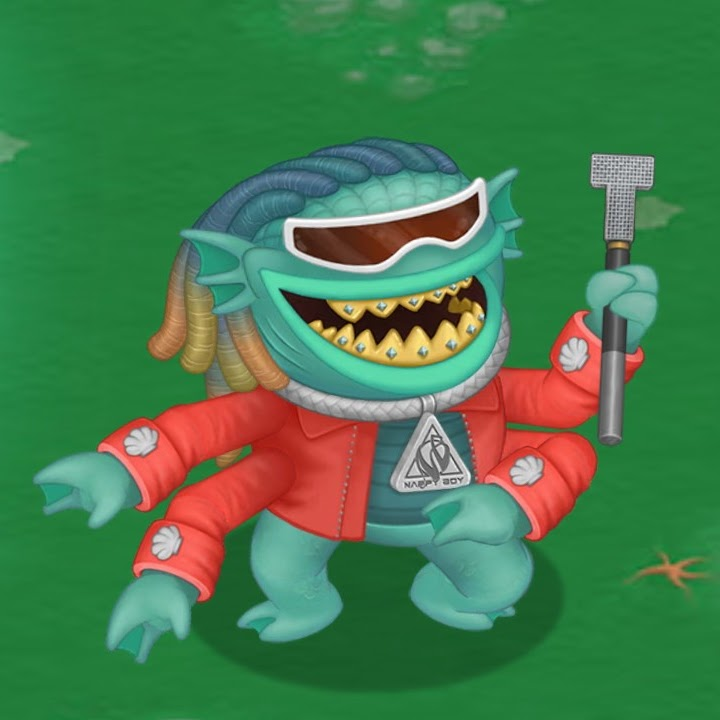

Featuring T-Pain
Known to many by its stage name Autotuna and its role as club manager for the Clubbox, the Mon behind the Legend is no less impressive. The multiple Clammy Award-winning T-Pirainha is believed to be as venerable as the fiery Phangler with which it shares several traits, and to quote its own Lyriqs, is naturally at home in the sea (although it also sings frequently about being on a boat). Speaking of 'Lyriqs' - these represent a special type of spoken worn unique to this Legendary species, brought to life and augmented by the microphone-like Lyriqal staff it carries. Beyond stylized pitch alteration, the staff is able to broadcast sound with such a profound resonance as to be heard in times and places other than its point of origin. How the T-Pirainha came to be in possession of such a powerful artifact, and whether or not it is even technology native to the Monster World, are secrets the Lyriqal Legendary is choosing to keep. Even though the T-Pirainha's sharp, bejeweled teeth might suggest a carnivorous diet, it is staunchly vegan like all other Monsters... although it prefers its veggies 'grilled.'
